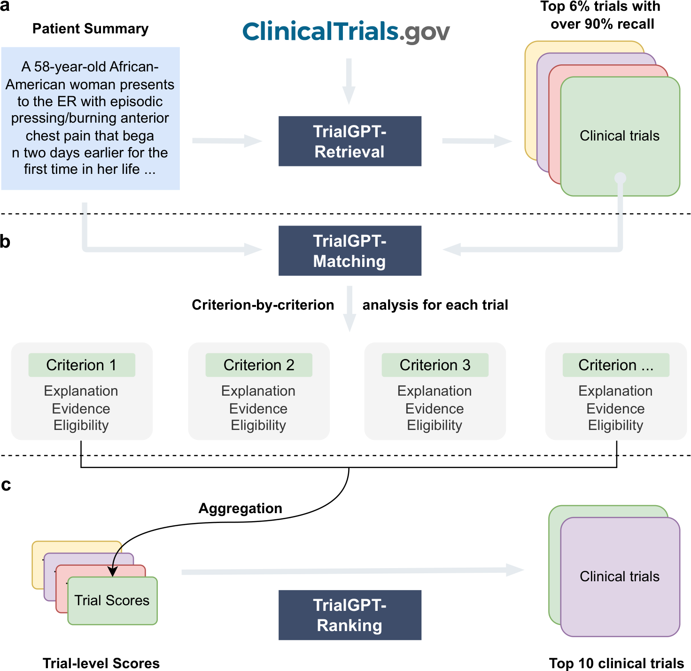
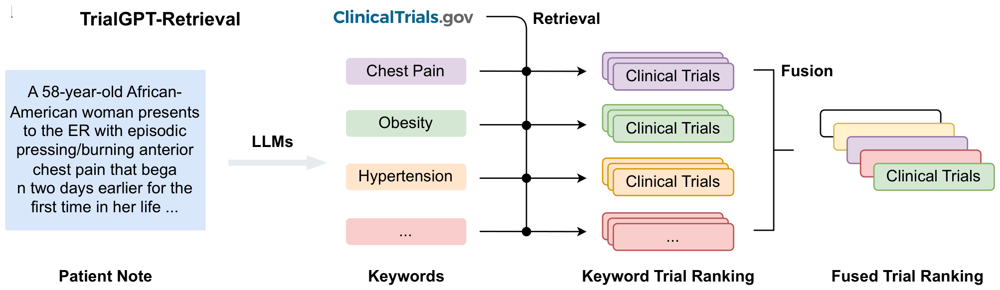
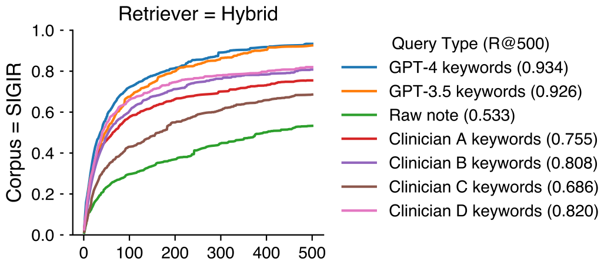
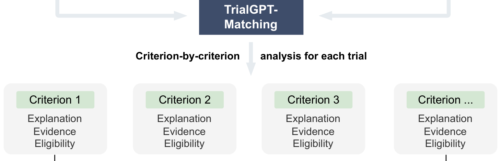
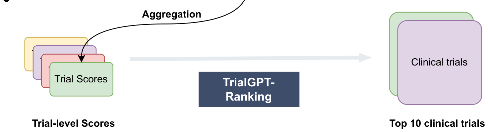

01Motivation
Clinical trials: importance & challenges
Importance of clinical trials
- The evidence base for practicing evidence-based medicine.
- The gold standard for drug development.
- A new drug takes ~10 years and ~$1B to develop — about half of it spent on trials.
The patient-recruitment bottleneck
- ~31% of RCTs discontinue, ~45% of them from poor recruitment (Kadam et al., 2016).
- In oncology, ~23% terminate early, ~35% of them from accrual issues (Bennette et al., 2016).
02Prior work
Two families of prior methods, each limited
Rule-based — convert criteria to EHR queries
- Translate eligibility criteria into structured (SQL) queries over the EHR (Criteria2Query).
- Needs accurate criteria→query translation.
- Only matches a trial to a list of patients, not patients to trials.
Embedding-based — match by similarity
- Embed patients and trials into a shared space and align them (DeepEnroll, COMPOSE).
- Need a significant amount of training data.
- Give no explanation a clinician can check.
03Method
TrialGPT: a zero-shot, end-to-end matching framework
- Given a patient summary and a large trial space, TrialGPT runs three zero-shot LLM modules — retrieve, match, and rank — each with a human-readable rationale.

04Setup
Evaluated on three annotated patient cohorts
| Cohort | SIGIR | TREC 2021 | TREC 2022 |
|---|---|---|---|
| Patients (N) | 58 | 75 | 50 |
| Age, years | 38.5 ± 23.7 | 41.6 ± 19.4 | 35.3 ± 20.2 |
| Sex (M : F) | 29 : 29 | 38 : 37 | 28 : 22 |
| Note length, words | 88.7 ± 36.8 | 156.2 ± 45.4 | 109.9 ± 21.6 |
| Eligible trials / patient | 7.3 ± 6.7 | 74.3 ± 49.0 | 78.8 ± 67.3 |
| Irrelevant trials / patient | 47.1 ± 19.5 | 323.2 ± 93.2 | 568.4 ± 164.1 |
| Initial trials considered | 3,621 | 26,149 | 26,581 |
Baseline statistics of the three patient cohorts (mean ± s.d.). Source: Table 1.
05Method · Retrieve
Hybrid & multi-query retrieval
- An LLM generates search keywords from the patient note.
- Each keyword retrieves trials from ClinicalTrials.gov via a BM25 + our MedCPT hybrid.
- The per-keyword rankings are fused (RRF) into one candidate list.

06Result · Retrieve
Recall >90% of relevant trials using <6% of the collection
- GPT-4 & GPT-3.5 keywords (top curves) beat four clinicians’ keywords (middle) and the raw note (bottom).
- On SIGIR, the hybrid retriever + GPT-4 keywords reach 0.934 recall by the top 500 trials.
- Overall, TrialGPT-Retrieval recalls >90% of relevant trials using <6% of the initial collection.

07Method · Match
Criterion-by-criterion analysis of candidate trials
- For each candidate trial, TrialGPT checks every inclusion and exclusion criterion.
- Each criterion gets an explanation, the supporting evidence, and an eligibility label.

08Result · Match
Highly accurate criterion-level analysis
- Three physician annotators graded 1,015 criterion-level predictions.
- All three outputs — explanation, evidence, eligibility — land near the 88.7–90.0% expert range.
| Prediction | Metric | TrialGPT-Matching |
|---|---|---|
| Explanation | Accuracy | 87.8% |
| Relevant sentences | F1 score | 88.6% |
| Eligibility | Accuracy | 87.3% |
Manual evaluation of 1,015 patient–criterion predictions; expert eligibility accuracy is 88.7–90.0%. Source: Fig. 3.
09Method · Rank
From criterion-level analysis to trial-level scores
- Criterion-level judgments are aggregated into a trial-level score (linear + LLM aggregation).
- Trials are re-ranked and the top ~10 are returned as recommendations.

10Result · Rank
Outperforms the best baseline by 43.8%
- Aggregates criterion-level judgments into trial-level scores.
- Top-10 ranking correlates strongly with expert annotations.
| Method | NDCG@10 | P@10 | AUROC | Average |
|---|---|---|---|---|
| SciFive | 0.427 | 0.379 | 0.590 | 0.465 |
| BioBERT | 0.409 | 0.375 | 0.595 | 0.460 |
| PubMedBERT | 0.433 | 0.387 | 0.598 | 0.473 |
| SapBERT | 0.415 | 0.374 | 0.593 | 0.461 |
| BioLinkBERT | 0.480 | 0.428 | 0.618 | 0.509 |
| TrialGPT-Ranking (GPT-3.5) | 0.540 | 0.512 | 0.658 | 0.570 |
| TrialGPT-Ranking (GPT-4) | 0.728 | 0.669 | 0.798 | 0.731 |
Ranking (NDCG@10, P@10) and exclusion (AUROC) vs. dedicated dual-/cross-encoder baselines. Best in bold. Source: Table 2.
11Result · Deploy
Pilot case study with the NCI
- Pilot user study with NCI oncologists.
- Screening time cut from 61.5 s to 35.3 s per patient — a 42.6% saving.
Average per-patient screening time in the user study (paired, statistically significant). Overall saving 42.6%. Source: Fig. 5.
12Recognition
Covered by NIH and the national health & tech press
NIH Director’s Challenge AwardNature Comms — AI/ML focusHealth Science Top 25 of 2024
- 2024NIH NewsNIH-developed AI algorithm matches potential volunteers to clinical trials
- 2024Healthcare IT NewsNew NIH tool uses genAI to connect volunteers with clinical trials
- 2024Inside Health PolicyNew ‘TrialGPT’ tool accelerates research by matching patients to trials
- 2024FedScoopHow NLM is testing AI to match patients to clinical trials
- 2024AUA NewsConnecting patients to clinical trials with artificial intelligence
- 2025NIH CatalystHomegrown AI: NIH tools benefiting the biomedical community
13Impact
Adopted by others in research & the clinic
- A prospective molecular tumor board study in npj Precision Oncology reranked trials using TrialGPT’s prompts.
- A standard baseline for new trial-matchers — e.g. JAMIA’s Distilling LLMs and KERAG.
- Reviewed across clinical-AI surveys as the reference LLM patient-to-trial matcher.
14Summary
Zero-shot patient-to-trial matching with LLMs
| Module | Objective | Result |
|---|---|---|
| TrialGPT-Retrieval | Filter out the bulk of irrelevant trials | Outperforms clinician search; recall >90% using the top 6% of trials |
| TrialGPT-Matching | Explainable criterion-by-criterion checking | Faithful explanations; >87% eligibility accuracy (≈ human) |
| TrialGPT-Ranking | Fine-grained re-ranking of candidate trials | Surpasses the best baseline method by 43.8% |
| Deployment | Pilot user study with NCI oncologists | Cuts patient screening time by 42.6% at equal accuracy |
Three zero-shot LLM modules, each with a human-readable rationale, plus a real-world pilot. Source: Jin et al., Nat Commun 2024.